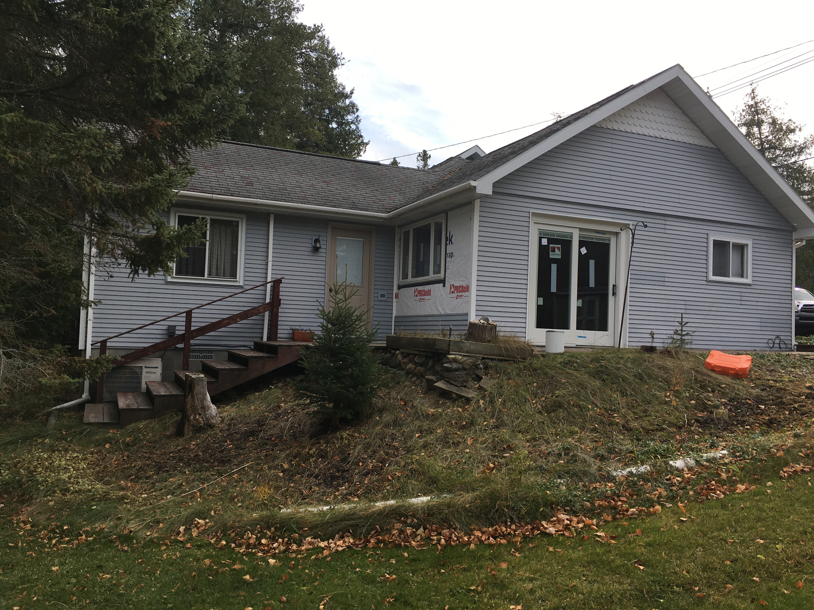
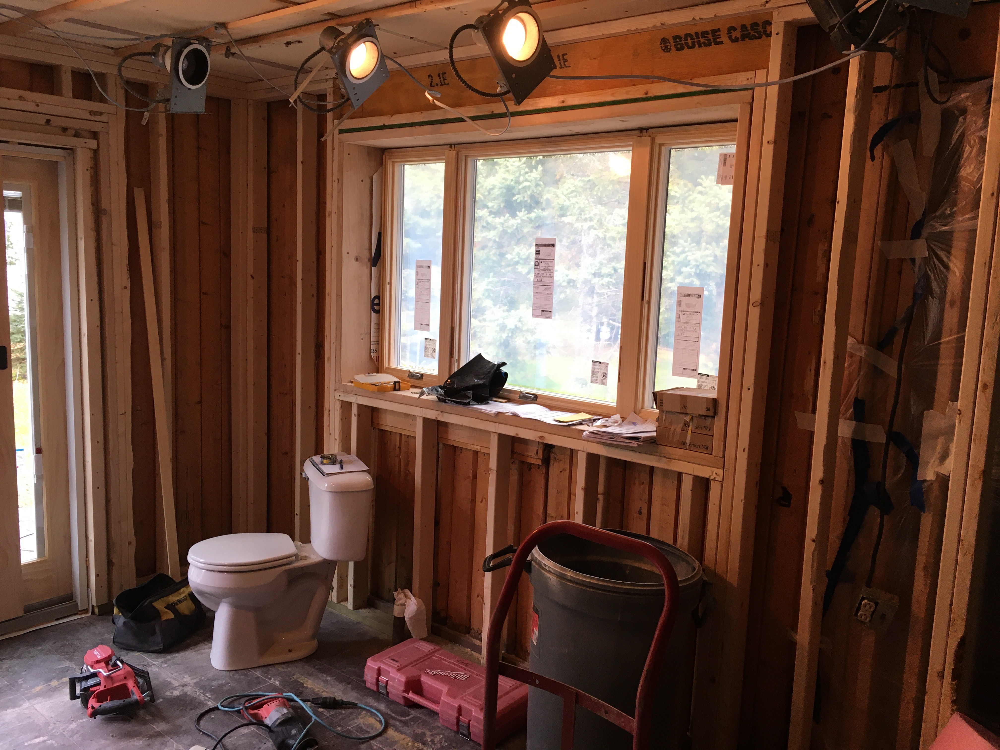
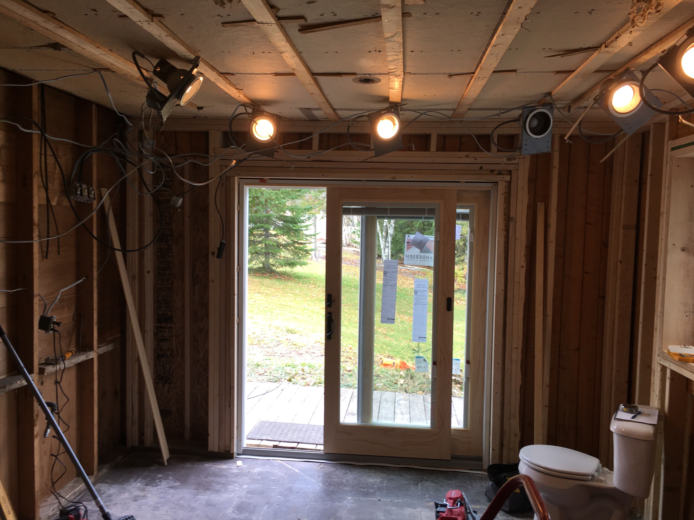

Photos - 2020-2021 Phase
Kitchen
A new doorwall and window combination has been installed in the kitchen that opens the indoors to the outdoors.
 In addition to the the new doorwall and combination window, a new framewall was installed. This new framewall provides a space to run plumbing and electrical and inject foam insulation.
When Great-great Grandpa Frost originally built the house, access to Northern Michigan for winter vacation visitors was very limited, and so, the cabin was only built for summer and early fall use. While Grandpa Castle took many measures to insulate the house from the cold Northern winters, he could not have predicted recent climate trends of less snow and more extreme temperature fluctuations in the Cheboygan area.
Although the house was built for warm weather use, this year's renovations will make the house a true year-round living space.
(Incidentally, the toilet is being temporarily stored in the kitchen in this photo while the workers were stripping out the bathroom.)
Bathroom


The front bathroom was stripped down to the exterior walls. The cement slab was also removed to allow new interior drainlines to be installed between the kitchen and the bathroom and the house septic line.
In these photos, the bathroom interior wall to the hallway has been removed. It will be replaced with a new wall with a pocket door.

A jackhammer was used to remove the bathroom slab floor and to make a trench between the kitchen and the bathroom. New plumbing will be routed beneath the replaced slab with drain lines laid with sufficient pitch to the house septic line.
Between the bathroom and the well room in the garage, plex tube plumbing will be routed through interior walls.